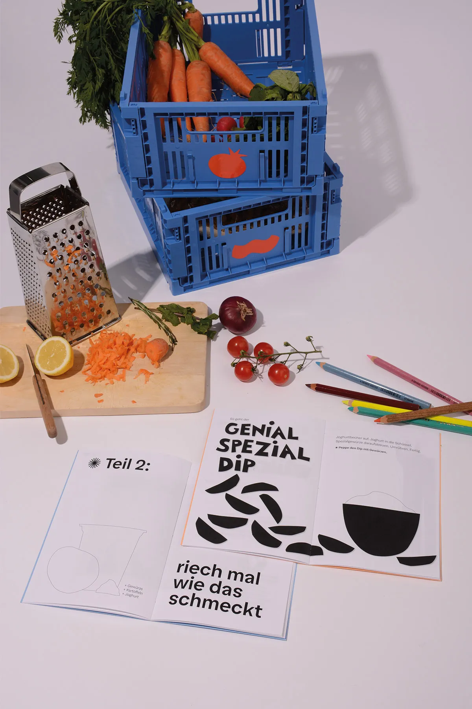
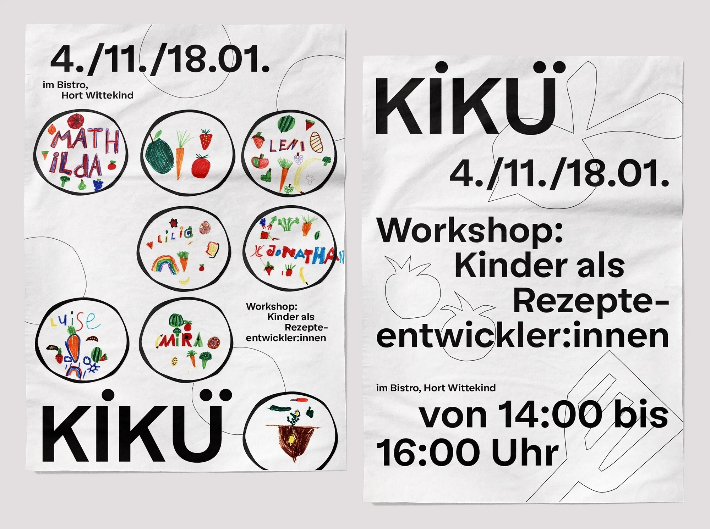
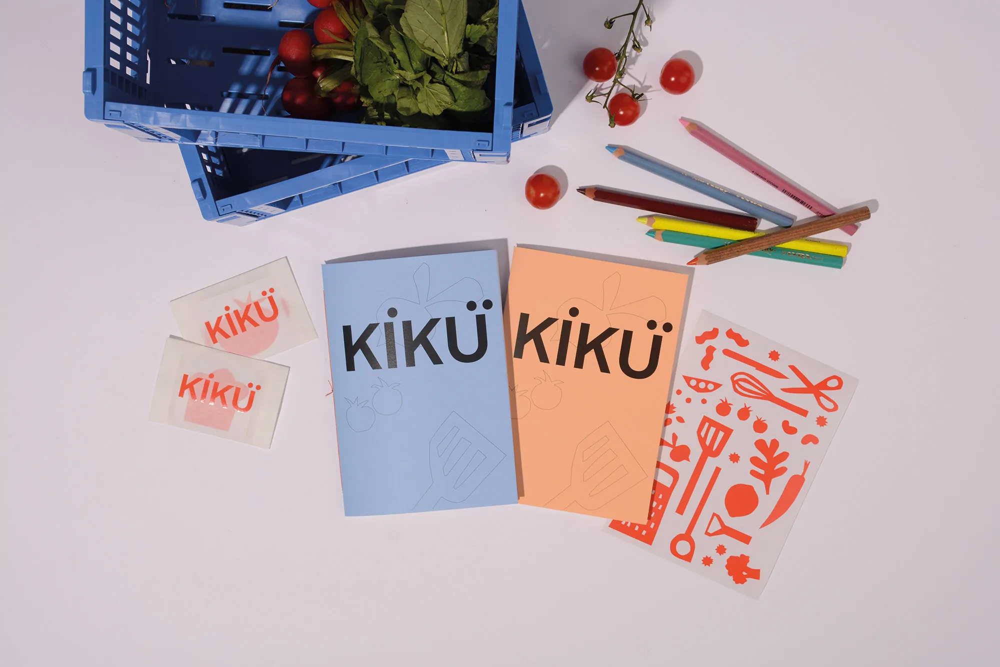
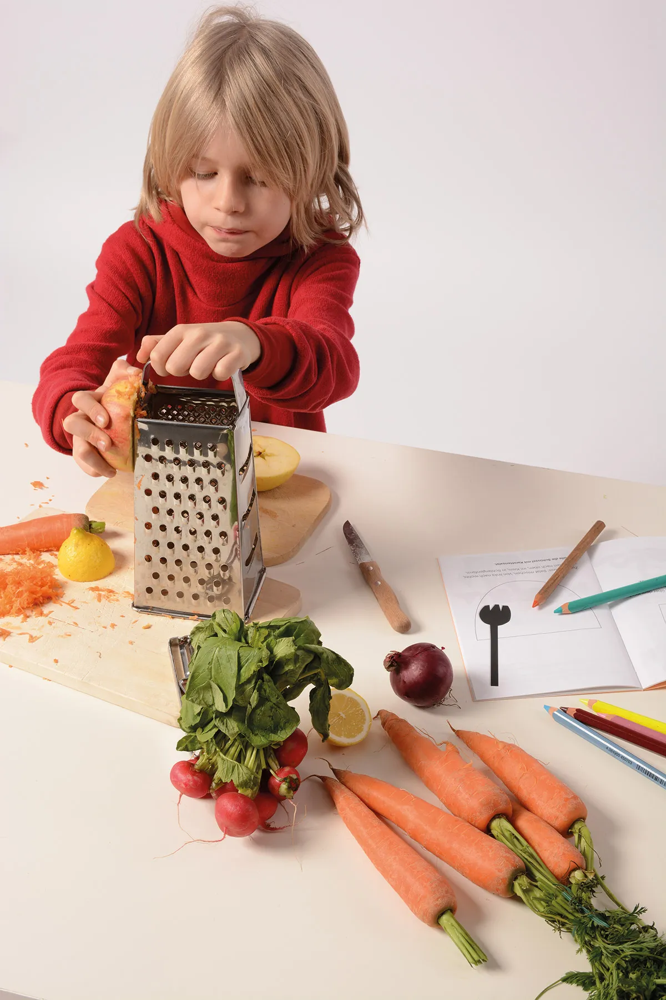
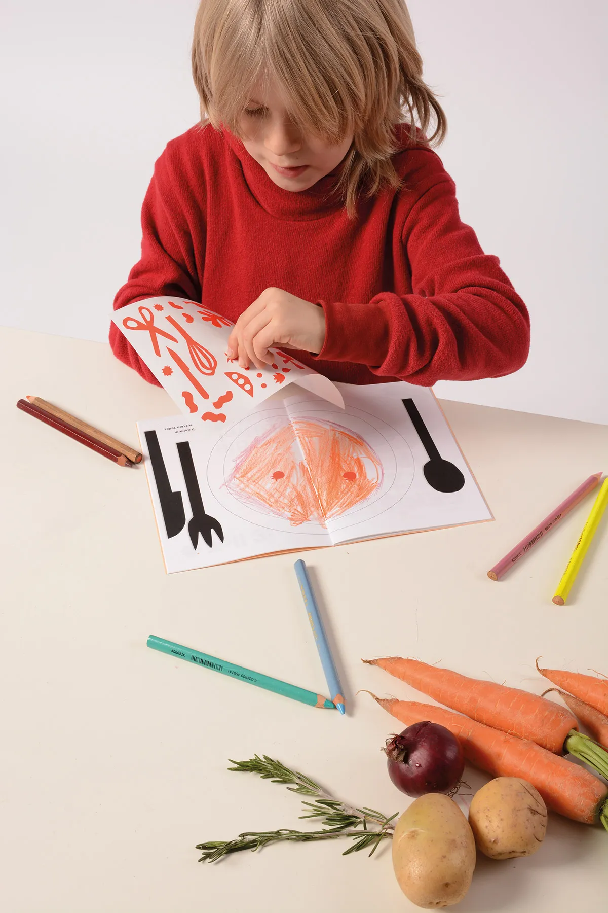
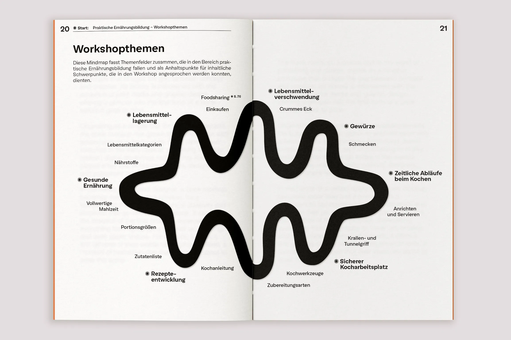
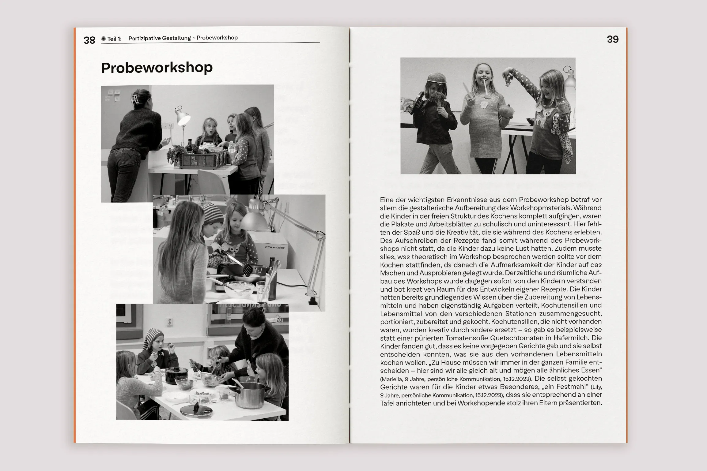
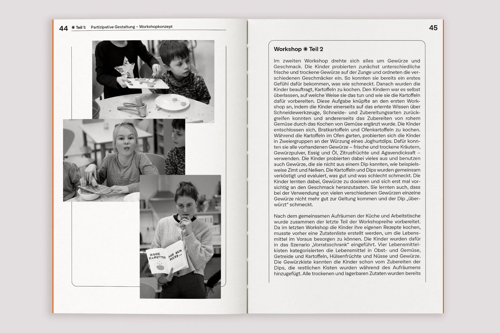
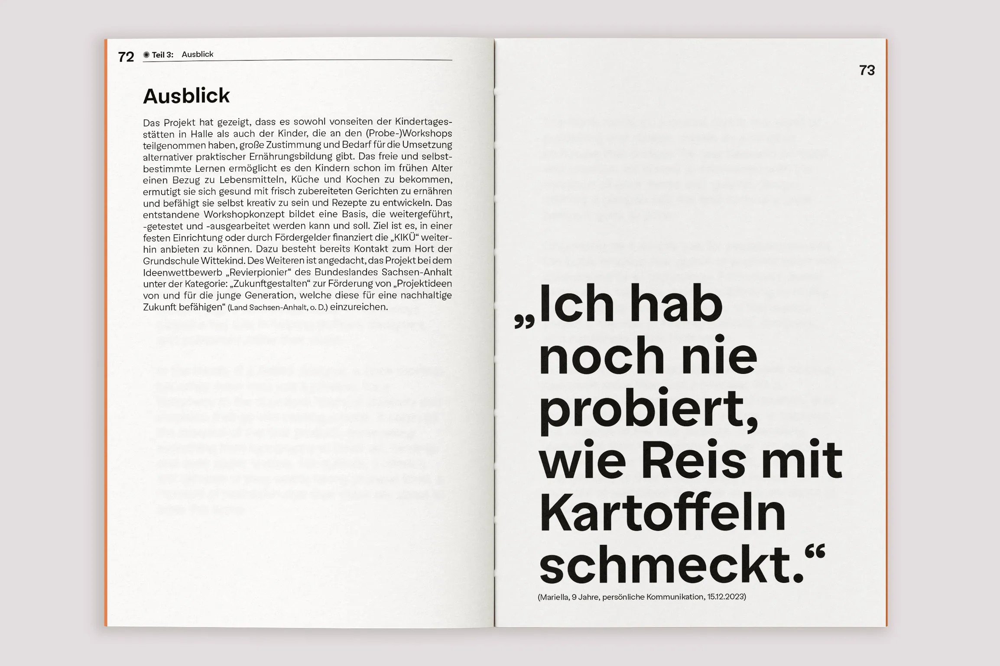

KIKÜ
KIKÜ ist ein dreiteiliger Workshop, der Kinder dazu ermutigt, in der Küche kreativ zu werden und eigene Rezepte zu entwickeln. Dabei lernen die Kinder Küchenutensilien kennen, probieren Schneidewerkzeuge aus, testen Geschmacks und Geruchssinn, denken darüber nach, was sie gerne essen, und experimentieren damit, wie sie es zubereiten können. Das Workshopkonzept wurde in einem partizipativen Gestaltungsprozess gemeinsam mit dem Hort der Grundschule Wittekind in Halle entwickelt.
Workshop, Partizipative Gestaltung